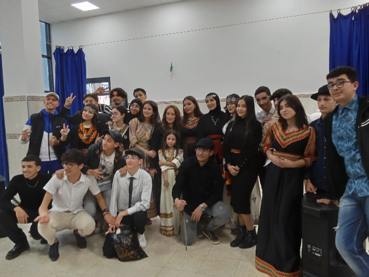
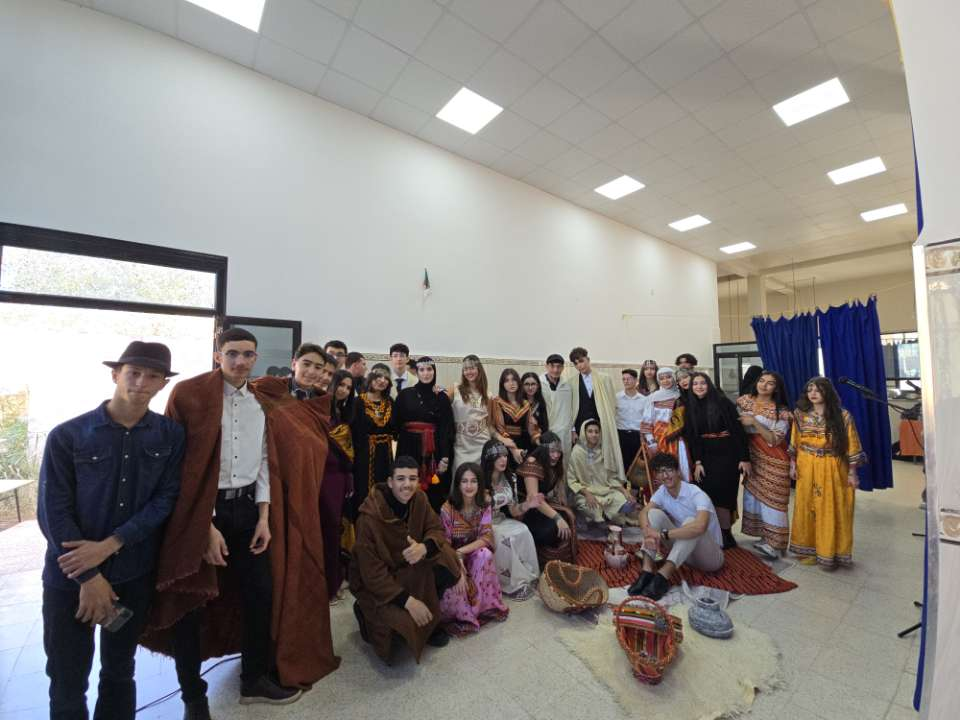
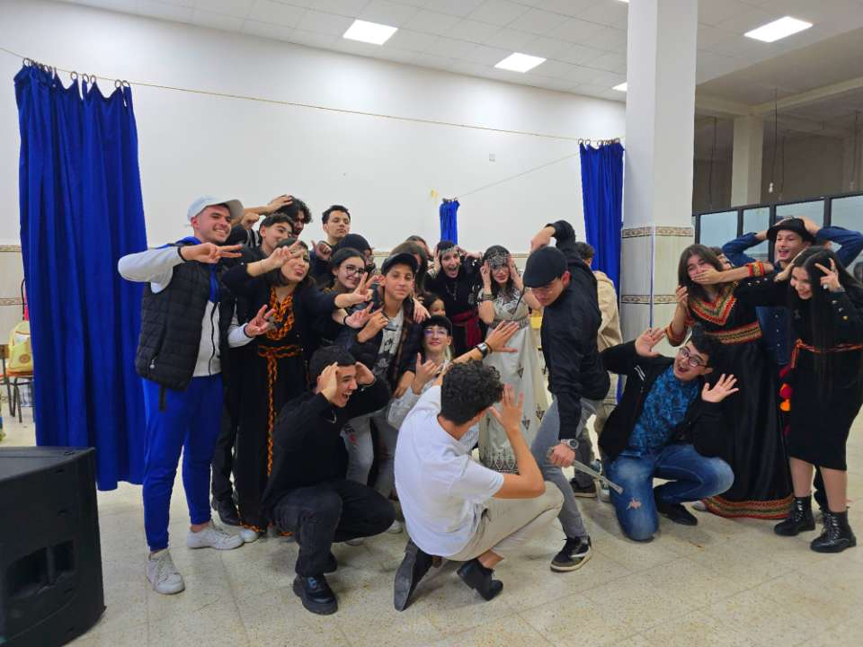

Journée Amazighe / اليوم الأمازيغي
Yennayer 2025 / ي ناير 2025
À l'occasion de Yennayer, notre lycée a vibré au rythme de la culture amazighe à travers diverses activités festives et éducatives.
بمناسبة يناير، عاشت ثانويتنا أجواء الثقافة الأمازيغية عبر أنشطة تربوية واحتفالية متنوعة

Théâtre amazigh / المسرح الأمازيغي
Nos élèves ont présenté des pièces traditionnelles mettant en valeur le patrimoine culturel.
قدم تلاميذنا عروضا مسرحية تعكس التراث الثقافي الأمازيغي

Orchestre traditionnel / الأوركسترا التقليدية
Un concert de musique amazighe interprété par nos jeunes talents musicaux.
حفل موسيقي أمازيغي قدمه مواهبنا الشابة

Défilé de tenues / عرض الأزياء
Présentation des costumes traditionnels des différentes régions d'Algérie.
عرض للأزياء التقليدية من مختلف مناطق الجزائر

Concours culinaire / مسابقة الطهي
Dégustation et jugement des plats traditionnels préparés par nos élèves.
تذوق وتحكيم الأطباق التقليدية التي أعدها التلاميذ